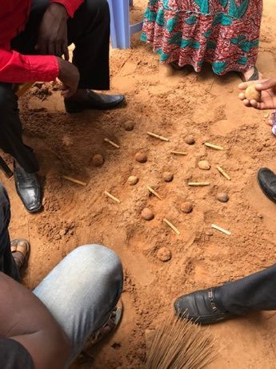
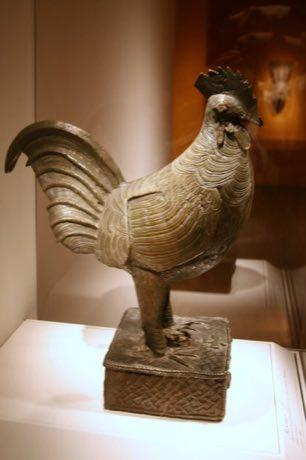

Home / Living Traditions / Africa: Sahel, West and Central
Playable heritage gameDara
Also known as Dili · Doki · Dili (Dara)
A game of the Sahel and Nigerian savanna, drawn in the sand or scratched on a board of six columns and five rows. Each player has twelve small stones, set out first and then slid one square at a time to build lines of exactly three.


How to play
- Take turns setting your stones on empty squares until all twenty-four are down; lines made now do not count.
- Then slide one of your stones to a neighbouring empty square, straight up, down, left or right.
- Line up exactly three stones in a row or a column to remove one of your rival's stones.
- Take stones that are not themselves in a line of three, if you can.
- Keep your own stones free: you lose when only two are left, or when you cannot move.
Rules at a glance
- The board has six columns and five rows; each player has twelve stones.
- Stones are set one per turn on any empty square before any stone is moved.
- A line of exactly three stones, across or down, is a mill; four or more in a row is not allowed.
- Mills made while setting stones do not capture.
- Stones move one square, never diagonally.
- Making a mill removes one rival stone; stones inside a rival mill are safe unless every stone is in a mill.
- Two mills made at once still remove only one stone.
- You lose when you are left with two stones or cannot move.
- A repeated position or a long run of moves with no capture is a draw.
About the tradition
Dara, also called doki by Hausa speakers and dili in Niger, is played across Nigeria and Niger, often drawn in sandy ground with pebbles, twigs or pieces of dried dung as the stones. Rules differ from village to village, especially about threes made while setting out the stones.
Origins
A living tradition passed from person to person; it is not tied to a single dated origin. It belongs to the cultural world of Africa: Sahel, West and Central.
Credits
- Game design: World Heritage Games (original)
- Photo: Seberle, CC BY-SA 4.0, source on Wikimedia Commons
- Text: CC BY-SA 4.0, World Heritage Games.
Sources

Get the app
Dara is coming to the App Store and Google Play. One app, many traditions, no account needed.
Included in Board & Table Games of World
More games to play

Adire indigo resist dyeing
Nigeria · Crafts and makingPlay preview · in the Textile Crafts of the World app
Fufu Pounding Rhythm
Ghana +1 · Crafts and makingPlay preview · in the Music & Dance of the World app
Goje One-String Fiddle
Nigeria +1 · Musical instrumentsPlay preview · in the String Music of the World app


More from Nigeria

Abula
Nigeria · Street and playground games
Dambe
Nigeria +1 · Street and playground games
Ikpu Ite Coil Pot
Nigeria · Crafts and making
Kokawa Hausa Wrestling
Nigeria +1 · Wrestling and martial sports

Talking drum
Nigeria · Musical instruments